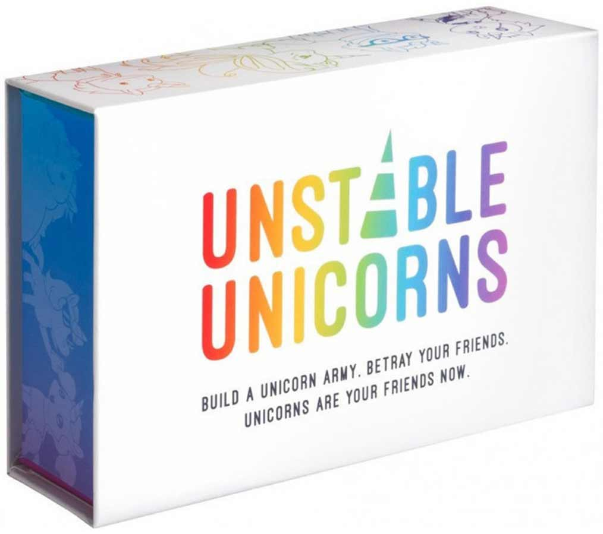
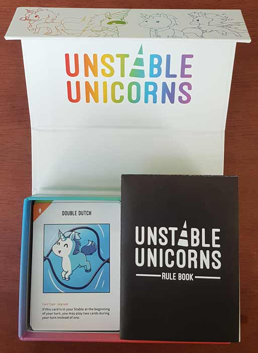
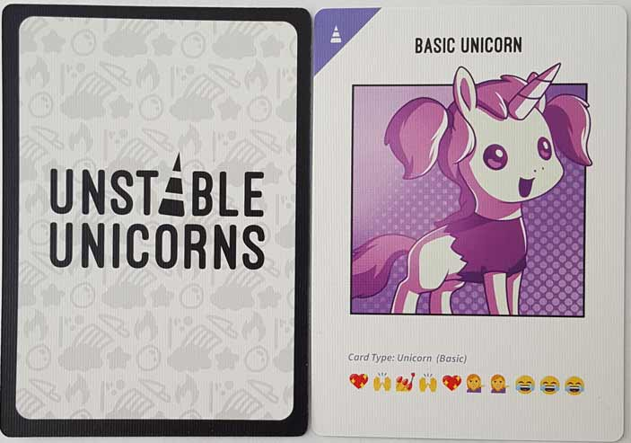
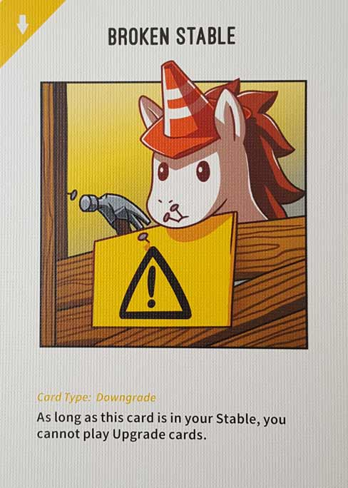
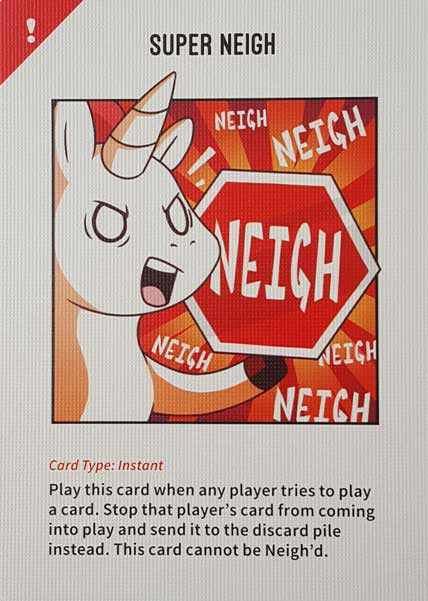
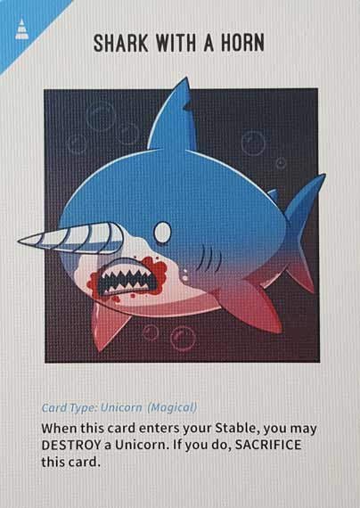
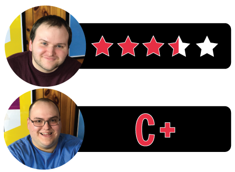

In this Unstable Unicorns review, D and Will offer their thoughts on the unpredictable unicorn-themed card game from designer Ramy Badie. A self-published title, Unstable Unicorns has its players drawing and playing a variety of cards while attempting to be the first player to amass a stable of 6-7 unicorns (depending on the player count). Along the way, players have to contend with magic-based chaos and the dreaded Neigh (and Super Neigh) cards. What do we think of this straightforward but crazy party game? Find out in the review below.

D reviews Unstable Unicorns
 (Author’s
note: this review is meant to accompany our gameplay video and will not
go in-depth on the game’s rules. If you’re interested in learning how
the game is played, please watch the video. It’s not bad.)
(Author’s
note: this review is meant to accompany our gameplay video and will not
go in-depth on the game’s rules. If you’re interested in learning how
the game is played, please watch the video. It’s not bad.)
If nothing else, Unstable Unicorns is really cute. The game’s designer, Ramy Badie, is also credited as being its artist and, at the very least, he really nailed that aspect. The cartoon unicorns (and narwhals and other animals) are all equally charming and amusing, and they definitely do a good job of setting the desired mood. Basically, Unstable Unicorns is not meant to be taken too seriously. It is very much a party game where the real reward isn’t winning, but rather having a good time. And it more or less succeeds at that, although I have some definite issues with it as well.
There is one game that I was most reminded of when we played this for the first time: Fluxx. This is a name that means different things to different people so let me make this clear: I don’t like Fluxx. At all. Yes, it seems pretty clever when you’re starting your first game, but then, all of a sudden, you’re like two hours in and actively trying to throw the game so that it will just end already. Unstable Unicorns is a better game than Fluxx, largely because it doesn’t try to be as clever, but it definitely has some similar issues. Chiefly, it feels like it goes on for longer than it should. Unlike Fluxx, where a game could conceivably end in a matter of minutes, a game of Unstable Unicorns is pretty much guaranteed to last at least half an hour, and there’s a good chance it will go longer than that, especially with higher player counts. Anything beyond maybe five people would probably be exhausting. There just isn’t enough substance here to warrant such a long playtime. This game would be better if you could play it in about 15-20 minutes. Fortunately, unlike Fluxx, there’s a pre-determined win condition. So if your group decides that you only want to play to, say, five unicorns instead of six or seven, you can easily do that and save yourself some time.
Also – and this should come as no surprise – luck plays a huge roll in Unstable Unicorns. There’s a pretty impressive number of effects and options found throughout the deck and, inevitably, they aren’t all going to be perfectly balanced. The fact of the matter is that winning will probably come down to whoever has the best luck drawing cards. It certainly helps to develop a strategy, but in a game like this where things can change in an instant, that doesn’t always work. This can certainly be frustrating, but like I said earlier, winning and losing isn’t as important as simply having fun when it comes to a game like this, and it’s still pretty fun as long as no one is taking things too seriously. It turns out that casual backstabbery and cute animals make for a pretty charming combination. It has an exceedingly modern style that I suppose might turn some people off, but I’d rather not party with the sort of person who scoffs at a pumpkin spice unicorn anyway.
Unstable Unicorns is far from perfect, but it makes for a pretty solid experience that is extremely easy to learn and should go over well with most people. The rulebook should probably be a bit more thorough about a couple of things and the duration is an issue, but the game doesn’t have any problems that render it unworthy of being played. This type of “Take That” game is a difficult one to pull off for a variety of reasons, but I’d rank Unstable Unicorns alongside the likes of Gloom as one of the few that I’d gladly play again.
D’s Rating: Three and One-Half Stars out of Five.
Will reviews Unstable Unicorns
 Unstable Unicorns is
neither particularly original nor especially enjoyable. Now, I
understand that’s a harsh way to start, but it was the first thing that
popped in my head, and it’s how I felt in the moment during our
sessions. As D pointed out in his review, the game shows some
similarities to Fluxx, and I think that’s fair. I noticed a bunch of different card games within Unstable Unicorns’ mechanics,
a fact that I found disappointing. Also, the gameplay is only
intermittently entertaining, at least to me. If it weren’t for a few
savvy design decisions, I don’t know if I’d want to play this again.
Unstable Unicorns is
neither particularly original nor especially enjoyable. Now, I
understand that’s a harsh way to start, but it was the first thing that
popped in my head, and it’s how I felt in the moment during our
sessions. As D pointed out in his review, the game shows some
similarities to Fluxx, and I think that’s fair. I noticed a bunch of different card games within Unstable Unicorns’ mechanics,
a fact that I found disappointing. Also, the gameplay is only
intermittently entertaining, at least to me. If it weren’t for a few
savvy design decisions, I don’t know if I’d want to play this again.
One design choice that I really like is the art style and its cohesion to the game’s threadbare theme. Unstable Unicorn’s designer, Ramy Badie, also created the artwork and it’s pretty striking. The vivid colors pop against the cards’ white background in an eye-catching manner. The unicorn illustrations are also very well drawn – they’re cute and varied enough to make the game seem more substantial than it is. I found the juxtaposition of how cute the unicorns are to how vicious their abilities are to be moderately brilliant. And the fact that the designer also drew the art means that the artwork and gameplay are completely cohesive. There’s no disconnect between them, which can happen when multiple artists adapt someone else’s gameplay.
The game started to lose me once we got toward the middle of our second session of it. Sure, it’s fun to play cards that deliberately mess with your opponents, as well as build up your own stable of eccentric unicorns. But that enjoyment quickly fades when you realize that the game suffers from an imbalance problem that’s prevalent throughout multiple playthroughs. It’s completely possible, given the nature of random card draws, that someone could assemble an unbeatable stable. There are a number of cards that make it extremely difficult to destroy a players’ cards, and if someone were to collect a number of those defensive assets, they would and often do gain an unfair advantage. This particular example is more uncommon than some of Unstable Unicorn‘s other problems, but it does come up.
There’s also the problem of overlapping special abilities, which came up three times during our video playthrough. By this, I mean that often in Unstable Unicorns, you’ll play a card that allows you to steal and/or play another card, and then that card activates and must be played out. And then it’s actually possible for this convoluted chain to continue, and trust me when I say that it can get pretty confusing. The game’s website actually has a rather lengthy FAQ to help solve some of these mix-ups, but who wants to constantly refer to something like that when playing a mostly light card/party game? I didn’t appreciate having to do it. Then again, you always have the option to just interpret the rules however you wish to, and I commend the rulebook for being clear on this point.
Also, Unstable Unicorns is too long or too short depending on how the cards are distributed. It’s entirely possible for a player to muster an overpowered hand and win within 20 minutes of gameplay. Alternatively, it’s just as if not more likely that the cards will spread out equally to the players, leading to sessions that last well over 30 minutes. That may be fine by you, but to me, that’s too long a playtime for a card game like this. After 20-25 minutes or so, this game’s shtick starts to wear thin.
When this game works, it can be really hilarious and enjoyable, but as I’ve pointed out, those moments tend to be few and far between. I’m not saying that this game is bad, because objectively it’s not. It’s just underwhelming and somewhat contrived, when it should be exciting and unpredictable. Occasionally, Unstable Unicorns will catch you by surprise, but the more you play it, the less surprising it becomes and the more you realize that the “chaos” is quite controlled, actually. Admittedly, the artwork is fantastic, ranking among the best I’ve seen in this category of tabletop game. It’s so pleasant to look at that I wouldn’t mind going back to see the cards once more. Whether or not this game is for you comes down to how much you can tolerate a beautiful mess. I can tolerate it, albeit barely.
I give Unstable Unicorns a: C+
Unstable Unicorns – Board Crazy’s Ratings

Leave a Reply
You must be logged in to post a comment.